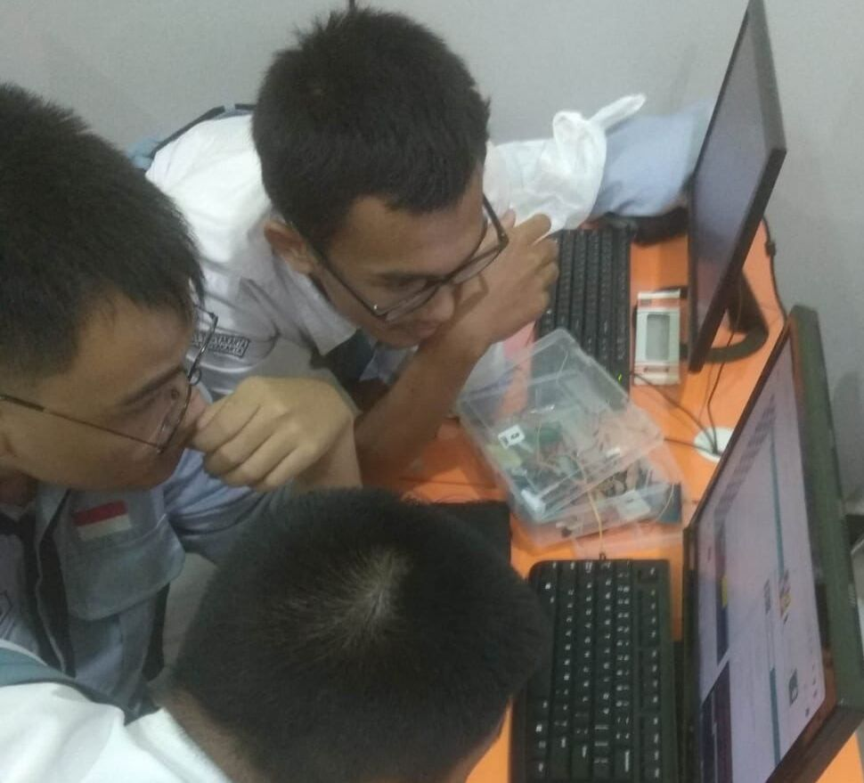

Layanan | Services
Jatya Agritech menawarkan berbagai layanan inovatif yang dirancang untuk mendukung transformasi pertanian tradisional menjadi sistem yang lebih efisien, cerdas, dan berkelanjutan. Dengan menggabungkan teknologi Internet of Things (IoT) dan otomatisasi, kami menyediakan solusi agroteknologi yang dapat disesuaikan dengan kebutuhan petani dan industri pertanian modern.
Berikut adalah layanan utama yang kami tawarkan:
-
1. Layanan Pengembangan dan Perancangan Alat Agroteknologi
Layanan ini meliputi pengembangan dan desain perangkat agroteknologi berbasis IoT yang dapat diintegrasikan ke dalam sistem pertanian tradisional atau modern. Kami bekerja sama dengan petani, peneliti, dan industri untuk merancang alat yang dapat memecahkan masalah spesifik di lapangan. Contohnya, kami merancang sistem irigasi otomatis yang dapat beroperasi berdasarkan kelembaban tanah atau kondisi cuaca, sehingga mengurangi penggunaan air berlebihan dan menjaga kondisi optimal untuk pertumbuhan tanaman. Selain itu, sensor-sensor IoT kami dikembangkan untuk memantau berbagai parameter penting seperti kelembaban tanah, suhu udara, kadar air, dan nutrisi tanaman secara real-time, sehingga petani dapat mengambil tindakan cepat untuk menjaga kesehatan tanaman.
.jpeg)
-
2. Layanan Pembuatan dan Pemasangan Alat Agroteknologi
Setelah tahap pengembangan, Jatya Agritech juga menyediakan layanan pembuatan dan pemasangan alat-alat agroteknologi tersebut. Kami memastikan bahwa setiap alat yang diproduksi memiliki kualitas tinggi dan berfungsi optimal di lapangan. Tim kami akan bekerja langsung di lokasi untuk memastikan pemasangan yang tepat dan melakukan uji coba agar sistem dapat berjalan lancar.
.jpeg)
-
3. Layanan Edukasi Agroteknologi IoT dan Otomatisasi
Teknologi hanya akan bermanfaat jika pengguna memahami cara penggunaannya. Oleh karena itu, kami menyediakan layanan edukasi yang dirancang untuk mengajarkan petani dan pelaku industri pertanian bagaimana memanfaatkan IoT dan otomatisasi untuk meningkatkan produktivitas dan efisiensi lahan mereka.
 -
4. Layanan Pengembangan dan Pendampingan Komunitas Pertanian Modern
Jatya Agritech juga berkomitmen untuk membantu pengembangan komunitas pertanian modern. Kami bekerja dengan petani, kelompok tani, koperasi, dan organisasi lain untuk mempercepat adopsi teknologi di kalangan petani serta menciptakan jaringan yang mendukung pertanian berkelanjutan.
.jpeg)